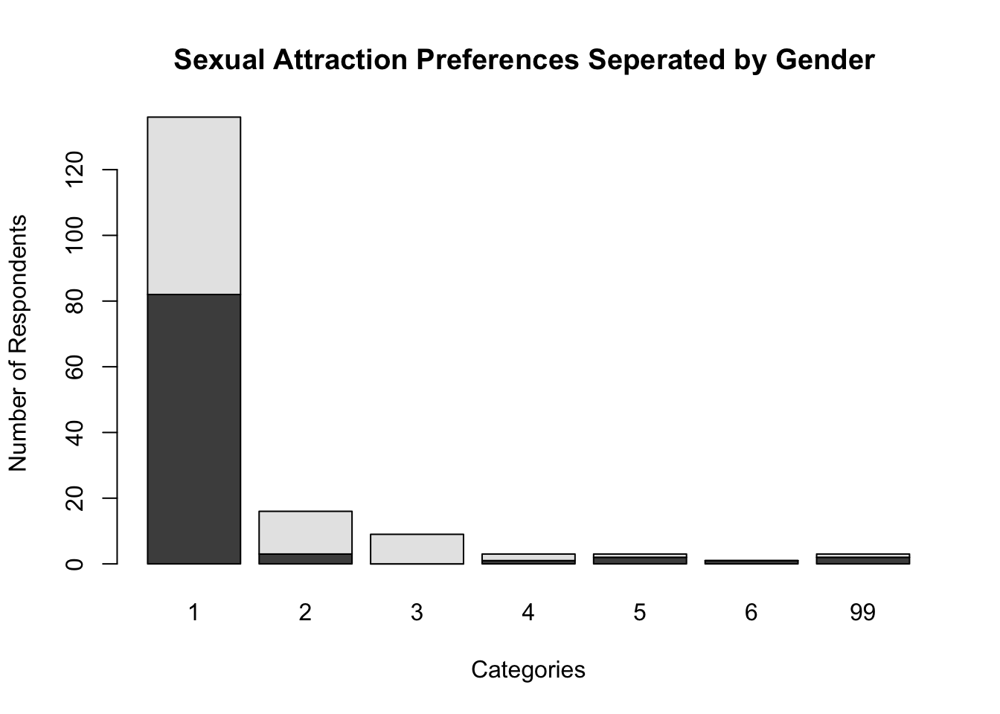
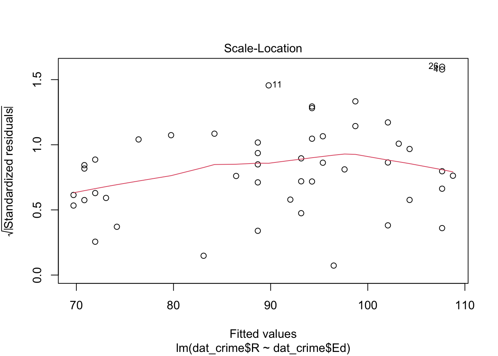
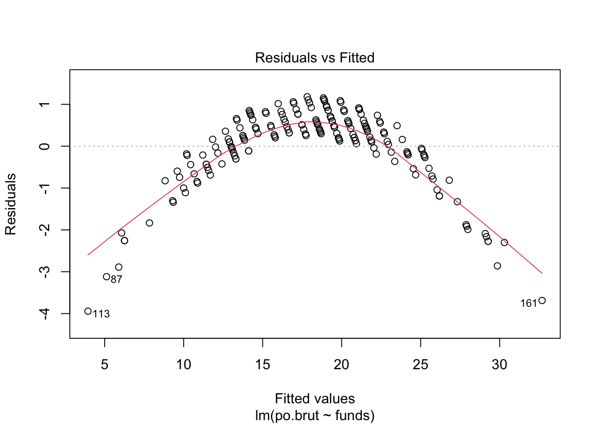
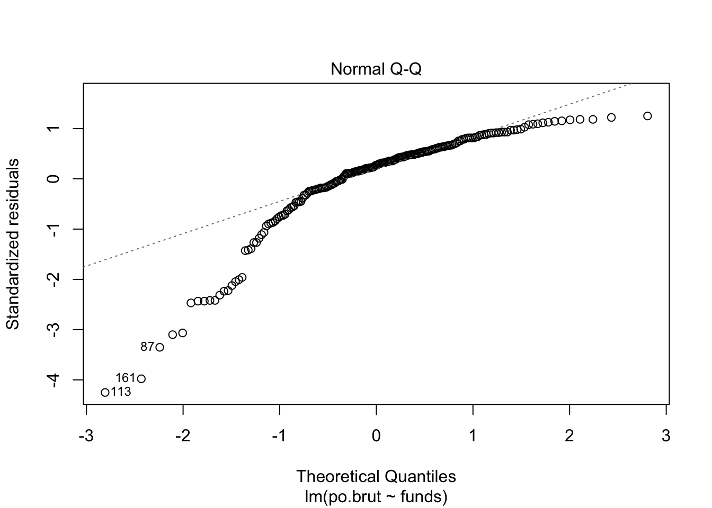
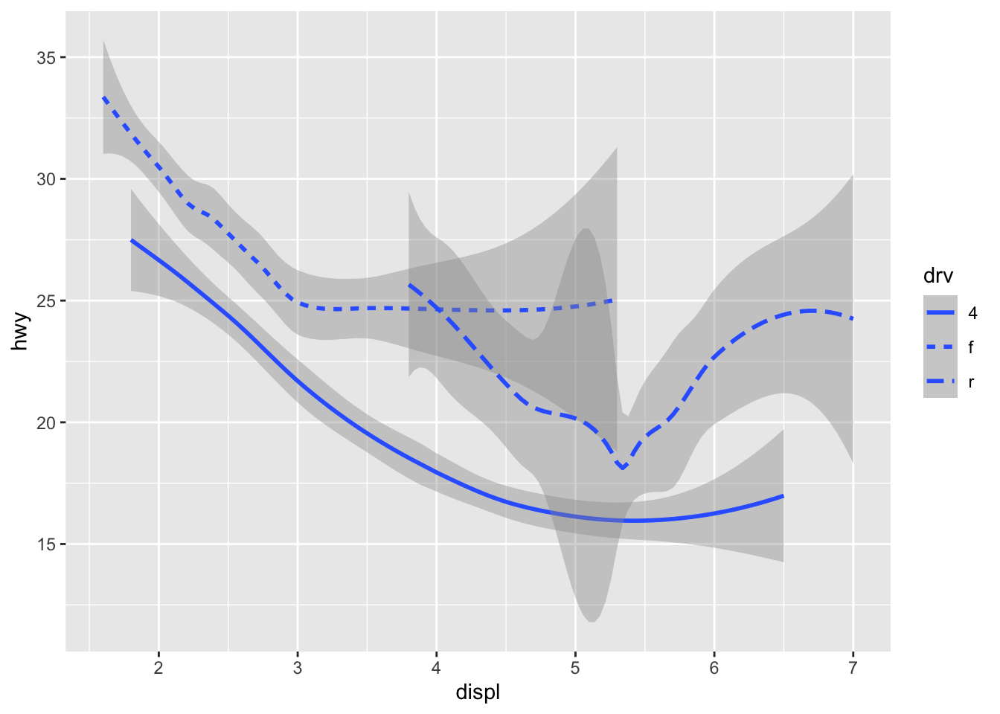
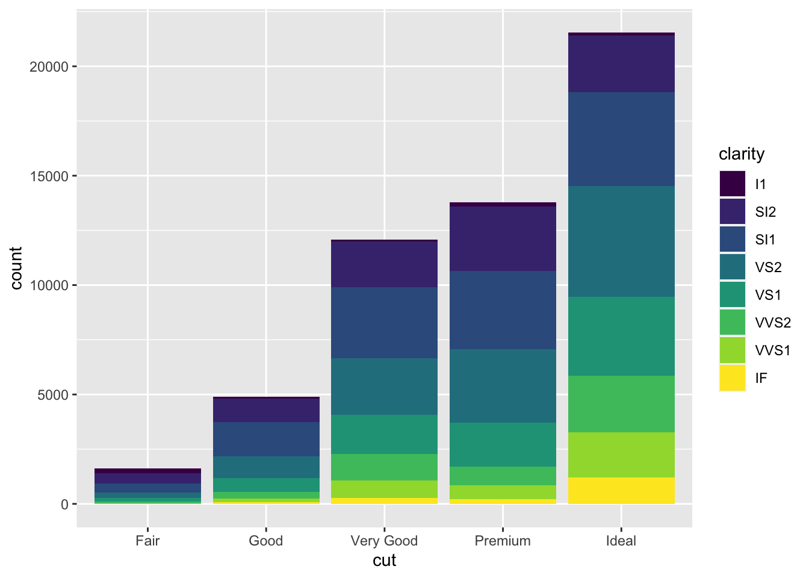
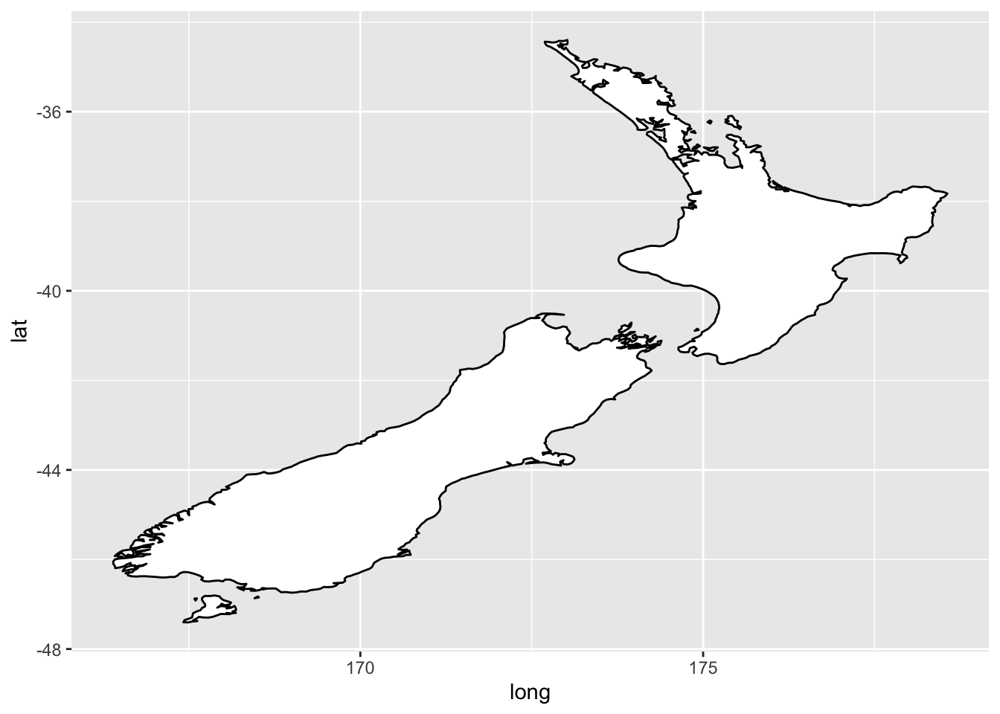
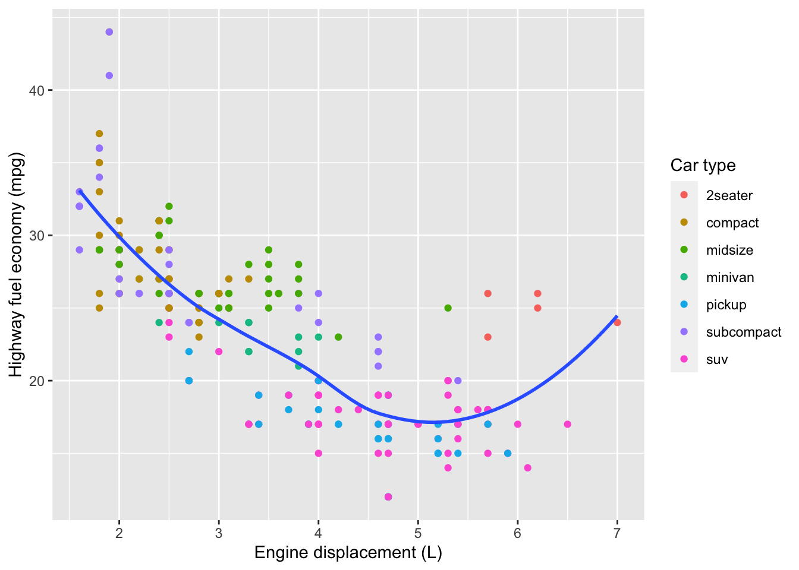

Exam 2
Niko Amber
11/01/2021
Niko Amber Assignments!
Assignment 1
Collaborators: Eliza Epstein.
Problem 1
Install the datasets package on the console below using install.packages("datasets"). Now load the library.
Answer: I’ve loaded the library!
Load the USArrests dataset and rename it dat. Note that this dataset comes with R, in the package datasets, so there’s no need to load data from your computer. Why is it useful to rename the dataset?
dat <- USArrestsAnswer: It is beneficial to rename the data set, so we can replicate analyses without disturbing the original data set. Additionally, it is nice to rename your data set to know exactly it is called
Problem 2
First I am making states lowercarse, to be used as variables later.
dat$state <- tolower(rownames(USArrests))This dataset has the state names as row names, so we just want to make them into a new variable. We also make them all lower case, because that will help us draw a map later - the map function requires the states to be lower case.
List the variables contained in the dataset USArrests.
The variables contained in the dataset ‘USArrests’ are Murder, Assault, and Rape. Additionally, the data set shows us what percentage of people live in urban areas.
USArrests## Murder Assault UrbanPop Rape state
## Alabama 13.2 236 58 21.2 alabama
## Alaska 10.0 263 48 44.5 alaska
## Arizona 8.1 294 80 31.0 arizona
## Arkansas 8.8 190 50 19.5 arkansas
## California 9.0 276 91 40.6 california
## Colorado 7.9 204 78 38.7 colorado
## Connecticut 3.3 110 77 11.1 connecticut
## Delaware 5.9 238 72 15.8 delaware
## Florida 15.4 335 80 31.9 florida
## Georgia 17.4 211 60 25.8 georgia
## Hawaii 5.3 46 83 20.2 hawaii
## Idaho 2.6 120 54 14.2 idaho
## Illinois 10.4 249 83 24.0 illinois
## Indiana 7.2 113 65 21.0 indiana
## Iowa 2.2 56 57 11.3 iowa
## Kansas 6.0 115 66 18.0 kansas
## Kentucky 9.7 109 52 16.3 kentucky
## Louisiana 15.4 249 66 22.2 louisiana
## Maine 2.1 83 51 7.8 maine
## Maryland 11.3 300 67 27.8 maryland
## Massachusetts 4.4 149 85 16.3 massachusetts
## Michigan 12.1 255 74 35.1 michigan
## Minnesota 2.7 72 66 14.9 minnesota
## Mississippi 16.1 259 44 17.1 mississippi
## Missouri 9.0 178 70 28.2 missouri
## Montana 6.0 109 53 16.4 montana
## Nebraska 4.3 102 62 16.5 nebraska
## Nevada 12.2 252 81 46.0 nevada
## New Hampshire 2.1 57 56 9.5 new hampshire
## New Jersey 7.4 159 89 18.8 new jersey
## New Mexico 11.4 285 70 32.1 new mexico
## New York 11.1 254 86 26.1 new york
## North Carolina 13.0 337 45 16.1 north carolina
## North Dakota 0.8 45 44 7.3 north dakota
## Ohio 7.3 120 75 21.4 ohio
## Oklahoma 6.6 151 68 20.0 oklahoma
## Oregon 4.9 159 67 29.3 oregon
## Pennsylvania 6.3 106 72 14.9 pennsylvania
## Rhode Island 3.4 174 87 8.3 rhode island
## South Carolina 14.4 279 48 22.5 south carolina
## South Dakota 3.8 86 45 12.8 south dakota
## Tennessee 13.2 188 59 26.9 tennessee
## Texas 12.7 201 80 25.5 texas
## Utah 3.2 120 80 22.9 utah
## Vermont 2.2 48 32 11.2 vermont
## Virginia 8.5 156 63 20.7 virginia
## Washington 4.0 145 73 26.2 washington
## West Virginia 5.7 81 39 9.3 west virginia
## Wisconsin 2.6 53 66 10.8 wisconsin
## Wyoming 6.8 161 60 15.6 wyomingProblem 3
What type of variable (from the DVB chapter) is Murder?
Answer: Murder is a categorical variable, it is one of many catagories that crime falls into. It is not ordinal, there is no ordering of crime.
What R Type of variable is it?
Answer: ‘Murder’ is a character variable, it contains information that isn’t numeric.
Problem 4
What information is contained in this dataset, in general? What do the numbers mean?
Answer: The Data set USArrests contains data about the rate of arrests for murder, rape and assault per 100,000 residents in each US state in 1973. The data set also includes the percent of the population living in urban cities in each state. The collums represent each type or crime (and urban population percentage) The numbers in each row are the rate of arrests per state (per 100,000).
Problem 5
Draw a (histogram) bar graph of Murder with proper labels and title. I used a bar graph instead of a histogram because I feel that is a better way to represent this data.
barplot(USArrests$Murder , names.arg = state.name,las=2, xlab = "States", ylab = "Rate of Murder Arrests per 100,000 people",
main = "Arrests for Murder in the United States 1973")
Problem 6
Please summarize Murder quantitatively. What are its mean and median? What is the difference between mean and median? What is a quartile, and why do you think R gives you the 1st Qu. and 3rd Qu.?
I used the summary function to gather this information
summary(USArrests$Murder)## Min. 1st Qu. Median Mean 3rd Qu. Max.
## 0.800 4.075 7.250 7.788 11.250 17.400The mean for murder is 7.788 meaning this is the average rate of people (per 100,000) murdered in each US state in 1973. The median for murder is 7.250 meaning in the United States in 1973 half of the states had a rate per 100,000 more that 7.250 and half had fewer. Median is the middle of numbers in a data set, while mean is the average of all numbers in said set. If the data is evenly distributed the median will equal the mean.
A quartile is when the data is divided into four equal parts: the 1st, 2nd, 3rd, and 4th quartile. R gives the 1st and 3rd quartile because it represents the middle of the data. 1st quartile is lowest 25% and 3rd quartile is highest 25%.
Problem 7
Repeat the same steps you followed for Murder, for the variables Assault and Rape. Now plot all three histograms together. You can do this by using the command par(mfrow=c(3,1)) and then plotting each of the three.
Note: I used bar graphs
barplot(USArrests$Murder , names.arg = state.name,las=2, xlab = "States", ylab = "Rate of Murder Arrests per 100,000 people",
main = "Arrests for Murder in the United States 1973")
#Bar plot for rape arrests
barplot(USArrests$Rape , names.arg = state.name,las=2, xlab = "States", ylab = "Rate of Arrests for Rapes per 100,000 people",
main = "Rate of Arrests for Rape in the United States in 1973")
#Bar plot for assault arrests
barplot(USArrests$Assault , names.arg = state.name,las=2, xlab = "States", ylab = "Rate of Arrests for Assault per 100,000",
main = "Rate of Arrests for Assaults in the United States")#plotting the graphs together
par(mfrow=c(3,1))
barplot(USArrests$Murder , names.arg = state.name,las=2, xlab = "States", ylab = "Rate of Murder Arrests per 100,000 people",
main = "Arrests for Murder in the United States 1973")
#Bar plot for rape arrests
barplot(USArrests$Rape , names.arg = state.name,las=2, xlab = "States", ylab = "Rate of Arrests for Rapes per 100,000 people",
main = "Rate of Arrests for Rape in the United States in 1973")
#Bar plot for assault arrests
barplot(USArrests$Assault , names.arg = state.name,las=2, xlab = "States", ylab = "Rate of Arrests for Assault per 100,000",
main = "Rate of Arrests for Assaults in the United States")
par## function (..., no.readonly = FALSE)
## {
## .Pars.readonly <- c("cin", "cra", "csi", "cxy", "din", "page")
## single <- FALSE
## args <- list(...)
## if (!length(args))
## args <- as.list(if (no.readonly)
## .Pars[-match(.Pars.readonly, .Pars)]
## else .Pars)
## else {
## if (all(unlist(lapply(args, is.character))))
## args <- as.list(unlist(args))
## if (length(args) == 1) {
## if (is.list(args[[1L]]) || is.null(args[[1L]]))
## args <- args[[1L]]
## else if (is.null(names(args)))
## single <- TRUE
## }
## }
## value <- .External2(C_par, args)
## if (single)
## value <- value[[1L]]
## if (!is.null(names(args)))
## invisible(value)
## else value
## }
## <bytecode: 0x7fd3f8d77ae8>
## <environment: namespace:graphics>What does the command par do, in your own words (you can look this up by asking R ?par)?
Answer: This command allows R to set paramaters, this way multiple data sets can be graphed together.
What can you learn from bar graphs the histograms together?
Answer: When we plot these bar graphs together we can compare each state’s arrest rates for different crimes. For example, when looking at the bar graphs it is easy to see that North Carolina’s arrest rate for assault is much higher than the arrest rate for rape. This can lead researchers to ask questions: why were there more arrests for assaults? Were there possible sexually based assault that should have been charged as rape?
Problem 8
In the console below (not in text), type install.packages("maps") and press Enter, and then type install.packages("ggplot2") and press Enter. This will install the packages so you can load the libraries.
Run this code:
library('maps')
library('ggplot2')
#this code creates a map
ggplot(dat, aes(map_id=state, fill=Murder)) +
geom_map(map=map_data("state")) +
expand_limits(x=map_data("state")$long, y=map_data("state")$lat)What does this code do? Explain what each line is doing.
Answer: This code creates a colored map that uses our data set to show murder rates. The lighter the blue, the higher the murder rate.
The first line of code creates a map that is divided by states. TYhe first line also applies the data set to the map, so the color of the state will be lighter if murder rates are higher. The second line of code designs the map by breaking it up by state. The last line of code expands the limits of the map
Here is my histogram
hist(dat$Murder, main = "Murder Rate in The United States in 1973", xlab = "Murder Rate", ylab = "Frequency",
color= "purple")## Warning in plot.window(xlim, ylim, "", ...): "color" is not a graphical
## parameter## Warning in title(main = main, sub = sub, xlab = xlab, ylab = ylab, ...): "color"
## is not a graphical parameter## Warning in axis(1, ...): "color" is not a graphical parameter## Warning in axis(2, ...): "color" is not a graphical parameter
\[\\[2in]\]
Assignment 2
Problem 1
knitr::opts_chunk$set(echo = TRUE)
setwd("/Users/nikoamber/Library/Mobile Documents/com~apple~CloudDocs/Penn/Freshman Fall/Criminology/Assignment 2")
dat <- read.csv(file = 'dat.nsduh.small.1.csv')
names(dat)## [1] "mjage" "cigage" "iralcage" "age2" "sexatract" "speakengl"
## [7] "irsex"nrow(dat)## [1] 171ncol(dat)## [1] 7There are seven columns and 171 rows
Problem 2
Describe the variables in the dataset.
The variables in the data are:
MJAGE which is how old the participants are the first time they used marijuana/hashish. It is a quantitative continuous variable.
CIGAGE which is how old the participants were when they first started smoking cigarettes everyday. It is a quantitative continuous variable.
IRALCAGE which is how old the participants were when they first tried alcohol. it is a quantitative continuous variable.
AGE2S which is the age of the respondents of the survey, categorized into groups. It is a categorical nominal variable.
IRSEX which is which sex participants identify as. It is a categorical, nominal variable. Participants can only identify as male or female. which is coded as 1 or 2.
SEXATRACT which is who participants of the study are attracted to. It is a categorical, nominal variable. Participants identified their sexual preference on a catagory scale of 1-6, but there is no ranking.
SPEAKENGL which is how well do participants speak English. It is a categorical, ordinal variable. Participants rate on a scale of 1-4 where 1 is speaking English well and 4 is not at all.
What is this dataset about? Who collected the data, what kind of sample is it, and what was the purpose of generating the data?
This data set is a sample form a 2019 survey taken by the National Survey of Drug Use and Health. This data is only a sample of the survey and has the first 1000 values, and does not include missing values. The data is a random sampling of the US population, and it can be used to tell us more about the US population and their relationship with drugs.
Problem 3: Age and gender
What is the age distribution of the sample like? Make sure you read the codebook to know what the variable values mean.
hist(dat$age2, main= "Histogram of ages of participants of 2019 NSDUH survey", xlab= "Ages in Groups", ylab= "Frequency" )Problem 3: Age and gender
What is the age distribution of the sample like? Make sure you read the codebook to know what the variable values mean.
hist(dat$age2, main= "Histogram of ages of participants of 2019 NSDUH survey", xlab= "Ages in Groups", ylab= "Frequency" ) The age distribution is from ages 12-65+. As mentioned in the code book, it is grouped in sections. but not every group holds the same number of years. Because of this it is difficult to see the age distribution properly. While it appears that most participants are in group 15, group 15 has ages 35-49 (14 years) while groups 1-9 only have one year.
The age distribution is from ages 12-65+. As mentioned in the code book, it is grouped in sections. but not every group holds the same number of years. Because of this it is difficult to see the age distribution properly. While it appears that most participants are in group 15, group 15 has ages 35-49 (14 years) while groups 1-9 only have one year.
Do you think this age distribution representative of the US population? Why or why not?
Because of the way the ages are grouped together, this histogram is left skewed. However, there are no respondents below the age of 12, which makes sense given the content of this survey. There are also very few older participants. Therefore this data is probably a good representation of the US population for the purposes of this study, but obviously is not representative of the entire US population.
Is the sample balanced in terms of gender? If not, are there more females or males?
table(dat$irsex)##
## 1 2
## 91 80There are more males than females in this sample. It is not representative of the US population, because in the population there are slightly more women then men. This scale is also on a bianary, when there are many people in the United States who may not identify with one of these two genders. According to the code book, the entire data set has more females then males, but in these 1000 data points, there are more males then females.
Use this code to draw a stacked bar plot to view the relationship between sex and age. What can you conclude from this plot?
tab.agesex <- table(dat$irsex, dat$age2)
barplot(tab.agesex,
main = "Stacked barchart",
xlab = "Age category", ylab = "Frequency",
legend.text = rownames(tab.agesex),
beside = FALSE) # Stacked bars (default)
In the age category 15, that represents respondents between 35 and 49 and 26-29, there is about an even distribution between men and women. However, the younger groups tend to have more female participants then male (group 8 does not have any male respondents) and the groups above 15 seerm to have a larger percentage of men.
Problem 4: Substance use
For which of the three substances included in the dataset (marijuana, alcohol, and cigarettes) do individuals tend to use the substance earlier?
par(mfrow=c (1,1))
plot(dat$age2, dat$mjage)cor(dat$age2, dat$mjage)## [1] 0.1811713cor(dat$age2, dat$cigage)## [1] 0.1697763plot(dat$age2, dat$cigage)cor(dat$age2, dat$iralcage)## [1] 0.07253557plot(dat$age2, dat$iralcage)People in the survey tended to use alcohol earlier than other substances. This can be seen by the scatter plots. Additionally, alcohol has the lowest correlation coefficient.
Problem 5: Sexual attraction
What does the distribution of sexual attraction look like? Is this what you expected?
counts <- table(dat$sexatract)
barplot(counts, main= "Sexual Attraction Preferences Based on Small Sample from NSDUH 2019", xlab= "Category", ylab="Number of Respondents") According to this bargraph, most people answered 1, which indicates preference for the opposite sex.This does not surprise me, as most people in the United States are heterosexual, however I would expect more people to answer 3 or 5.
What is the distribution of sexual attraction by gender?
counts <- table(dat$irsex, dat$sexatract)
barplot(counts, main= "Sexual Attraction Preferences Seperated by Gender ", xlab="Categories", ylab= "Number of Respondents")Group 1, which is heterosexual, is mainly composed of males. While group 3, which is bisexual is completely female. Group 6, which is homosexual, is also completely male.
Problem 6: English speaking
What does the distribution of English speaking look like in the sample? Is this what you might expect for a random sample of the US population?
counts <- table(dat$speakengl)
barplot(counts, main= "How Well Sample of Respondents of NSDUH 2019 Speak English", xlab="Categories", ylab="Number of Respondents" )
Most participants speak English very well, very few speak well and almost none speak not well or none at all. If this survey was only given out in English, this distribution makes sense. But in the US population, while the majority of people speak English, many do not speak it “very well.”
Are there more English speaker female or males?
counts <- table(dat$irsex, dat$speakengl)
barplot(counts, main= "How Well Sample of Respondents of NSDUH 2019 Speak English Seperated by Gender", xlab="Categories", ylab="Number of Respondents" )There are a similar number of males and females who speak English “very well” There are many more females who speak English “Well,” so overall there are more females then males who speak English.
Exam 1
Date:
Instructions
Create a folder in your computer (a good place would be under Crim 250, Exams).
Download the dataset from the Canvas website (fatal-police-shootings-data.csv) onto that folder, and save your Exam 1.Rmd file in the same folder.
Download the README.md file. This is the codebook.
Load the data into an R data frame.
dat <- read.csv(file = 'fatal-police-shootings-data.csv')
head(dat)## id name date manner_of_death armed age gender race
## 1 3 Tim Elliot 2015-01-02 shot gun 53 M A
## 2 4 Lewis Lee Lembke 2015-01-02 shot gun 47 M W
## 3 5 John Paul Quintero 2015-01-03 shot and Tasered unarmed 23 M H
## 4 8 Matthew Hoffman 2015-01-04 shot toy weapon 32 M W
## 5 9 Michael Rodriguez 2015-01-04 shot nail gun 39 M H
## 6 11 Kenneth Joe Brown 2015-01-04 shot gun 18 M W
## city state signs_of_mental_illness threat_level flee
## 1 Shelton WA True attack Not fleeing
## 2 Aloha OR False attack Not fleeing
## 3 Wichita KS False other Not fleeing
## 4 San Francisco CA True attack Not fleeing
## 5 Evans CO False attack Not fleeing
## 6 Guthrie OK False attack Not fleeing
## body_camera longitude latitude is_geocoding_exact
## 1 False -123.122 47.247 True
## 2 False -122.892 45.487 True
## 3 False -97.281 37.695 True
## 4 False -122.422 37.763 True
## 5 False -104.692 40.384 True
## 6 False -97.423 35.877 TrueProblem 1 (10 points)
a.Describe the dataset.
This is the source: https://github.com/washingtonpost/data-police-shootings. Write two sentences (max.) about this.
This data set is data collected by the Washington Post. It gives information about how many fatal shootings there were by an active duty police officer, and gives details about the victim (example: armed or unarmed.)
b. How many observations are there in the data frame?
nrow(dat)## [1] 6594There are 6594 observations in the data frame.
c. Look at the names of the variables in the data frame. Describe what “body_camera”, “flee”, and “armed” represent, according to the codebook. Again, only write one sentence (max) per variable.
names(dat)## [1] "id" "name"
## [3] "date" "manner_of_death"
## [5] "armed" "age"
## [7] "gender" "race"
## [9] "city" "state"
## [11] "signs_of_mental_illness" "threat_level"
## [13] "flee" "body_camera"
## [15] "longitude" "latitude"
## [17] "is_geocoding_exact"“Body_camera” indicates whether or not the officer was wearing a body camera that may have recorded part of the incident. “flee” represents whether or not the victim was moving away from the officers and how they fled. “armed” represents whether or not the victim was armed with something the officers belived could inflict harm and specifies what, if anything, the victims were carrying.
d. What are three weapons that you are surprised to find in the “armed” variable? Make a table of the values in “armed” to see the options.
table(dat$armed)##
## air conditioner
## 207 1
## air pistol Airsoft pistol
## 1 3
## ax barstool
## 24 1
## baseball bat baseball bat and bottle
## 20 1
## baseball bat and fireplace poker baseball bat and knife
## 1 1
## baton BB gun
## 6 15
## BB gun and vehicle bean-bag gun
## 1 1
## beer bottle binoculars
## 3 1
## blunt object bottle
## 5 1
## bow and arrow box cutter
## 1 13
## brick car, knife and mace
## 2 1
## carjack chain
## 1 3
## chain saw chainsaw
## 2 1
## chair claimed to be armed
## 4 1
## contractor's level cordless drill
## 1 1
## crossbow crowbar
## 9 5
## fireworks flagpole
## 1 1
## flashlight garden tool
## 2 2
## glass shard grenade
## 4 1
## gun gun and car
## 3798 12
## gun and knife gun and machete
## 22 3
## gun and sword gun and vehicle
## 1 17
## guns and explosives hammer
## 3 18
## hand torch hatchet
## 1 14
## hatchet and gun ice pick
## 2 1
## incendiary device knife
## 2 955
## knife and vehicle lawn mower blade
## 1 2
## machete machete and gun
## 51 1
## meat cleaver metal hand tool
## 6 2
## metal object metal pipe
## 5 16
## metal pole metal rake
## 4 1
## metal stick microphone
## 3 1
## motorcycle nail gun
## 1 1
## oar pellet gun
## 1 3
## pen pepper spray
## 1 2
## pick-axe piece of wood
## 4 7
## pipe pitchfork
## 7 2
## pole pole and knife
## 3 2
## railroad spikes rock
## 1 7
## samurai sword scissors
## 4 9
## screwdriver sharp object
## 16 14
## shovel spear
## 7 2
## stapler straight edge razor
## 1 5
## sword Taser
## 23 34
## tire iron toy weapon
## 4 226
## unarmed undetermined
## 421 188
## unknown weapon vehicle
## 82 213
## vehicle and gun vehicle and machete
## 8 1
## walking stick wasp spray
## 1 1
## wrench
## 1I was surprised to find binoculars, air conditioners and a motorcycle, because these are not things that I would typically think of as weapons. I wonder who determined that these items were a threat.
Problem 2 (10 points)
a. Describe the age distribution of the sample. Is this what you would expect to see?
hist(dat$age, main= "Frequency of ages of police shooting victims from Washington Post Data", xlab = "Ages of victims" )The age distribution is right skewed. This means that most of the victims were younger (20-40) This is what I would expect to see, because police shootings typically happen to people who police “perceive as threats” and very old people typically wont be seen as threats.
b. To understand the center of the age distribution, would you use a mean or a median, and why? Find the one you picked.
counts <- table(dat$age)
median(counts)## [1] 66.5Because this data is right skewed I used a median to find the center of age distribution. Outliers can have more of an impact on the mean, which would not make it as useful as a statistician.
c. Describe the gender distribution of the sample. Do you find this surprising?
table(dat$gender)##
## F M
## 3 293 6298The gender distribution is not even. There are far more men then women. This makes sense because police usually perceive men as more of a threat than women. Additionally, men are arrested more than women overall according to the FBI.
Problem 3 (10 points)
a. How many police officers had a body camera, according to news reports? What proportion is this of all the incidents in the data? Are you surprised that it is so high or low?
table(dat$body_camera)##
## False True
## 5684 910sum(table(dat$body_camera))## [1] 6594 5684/6594## [1] 0.8619958There are many more people who were not wearing body cams then people who were. There were 5684 people not wearing body cams out of the 6594 recorded, which means 86.2 percent of officers did not have their cameras on. I would think that there would be more people wearing body cams in data recorded since 2015, because there has been a big push for more body cams in the recent years. However, many police officers do not turn on their body cameras.
b. In how many of the incidents was the victim fleeing? What proportion is this of the total number of incidents in the data? Is this what you would expect?
table(dat$flee)##
## Car Foot Not fleeing Other
## 491 1058 845 3952 2481058 + 845 + 3952 + 248## [1] 6103(1058 + 845 + 248)/6103## [1] 0.3524496There are 491 pieces of missing data I excluded these from my calculations. I assume this means that the people who collected the data do not know whether the victims fled, but they did not make it clear. Additionally, I am assuming that “other” means people who fled in a different way then car or foot. There are a total of 6103 pieces of data (minus the data that was missing) and there are 845 people who fled on foot, 1058 by car and 248 by other. This means that only 35 percent of victims attempted to flee. I would expect it to be more, because police officers should not have to shoot people who are not fleeing. At the same time, if a victim is fleeing they may not be an imminent danger to a police officer (because they are running, not attacking), so it is possible the officers wouldn’t shoot.
Problem 4 (10 points) - Answer only one of these (a or b).
- Describe the relationship between the variables “body camera” and “flee” using a stacked barplot. What can you conclude from this relationship?
Hint 1: The categories along the x-axis are the options for “flee”, each bar contains information about whether the police officer had a body camera (vertically), and the height along the y-axis shows the frequency of that category).
Hint 2: Also, if you are unsure about the syntax for barplot, run ?barplot in R and see some examples at the bottom of the documentation. This is usually a good way to look up the syntax of R code. You can also Google it.
Your answer here.
b. Describe the relationship between age and race by using a boxplot. What can you conclude from this relationship?
Hint 1: The categories along the x-axis are the race categories and the height along the y-axis is age.
Hint 2: Also, if you are unsure about the syntax for boxplot, run ?boxplot in R and see some examples at the bottom of the documentation. This is usually a good way to look up the syntax of R code. You can also Google it.
table(dat$race)##
## A B H N O W
## 752 106 1553 1083 91 47 2962plot(factor(dat$race), dat$age, main= "Barplot of Age of Victims and Race",xlab= "Race in Catagories", ylab= "Age of victims",
names=c("unkown","Asian","Black","Hispanic","NA ","Other","White"))NOTE there is missing data. The first bar plot represents “unknown” data. Black= Black Non-Hispanic, White= White, non-Hispanic, NA= Native American
There is a clear distinction between the median age victims who are white and every other race (excluding unknown). The median age of victims who are white are much higher than the median age of victims of the other races. Additionally, the ages of white victims are much more evenly dispered. The box is close to the middle which shows a more even dispersion, and the box is longer which shows more dispersed data within Q2 and Q3. Native Americans and black victims have the lowest median age, although there are many outliers who are black. This data shows that victims or color tend to be younger than white victims of police shootings.
Extra credit (10 points)
a. What does this code tell us?
mydates <- as.Date(dat$date)
head(mydates)
(mydates[length(mydates)] - mydates[1])
2458/365This code tells us the number of days of data we have. The data has been being kept since 2015, and it is now 2021. So it makes sense that the data is of 2458 says (6.7 years)
b. On Friday, a new report was published that was described as follows by The Guardian: “More than half of US police killings are mislabelled or not reported, study finds.” Without reading this article now (due to limited time), why do you think police killings might be mislabelled or underreported?
It seems that police killings are underreported in federal data bases. According to the Washington Post Study, the FBI and CDC does not log as many fatal shootings as there actually are. Police killings are most likely under reported because it is a liability to police forces when one of their officers shoots and kills a victim. Additionally, as this data shows, minority victims tend to be younger, which demonstrates possible racial prejudice. Police killings are most likely misreported because people may blame death on other factors than a gun wound. If the cause of death is reported differently, then a victim would not be counted towards a police shooting death.
c. Regarding missing values in problem 4, do you see any? If so, do you think that’s all that’s missing from the data?
In problem 4 the missing value is an unknown race. This differs from the race catagory of ‘other,’ which shows victims who do not identify as one of the specific racial categories laid out by the Washington Post. I assume that there is much more information missing in general. There is missing data about whether victims fled. There are probably many missing values of signs of mental illness, because that is not easy data to collect. Additionally, the data that the Washington Post collected is from many different sources, none of which have all the pieces data they wish to collect. Overall, there is probably a lot of data and variables missing that are important to understanding the full scope of the circumstances of the shooting. This data just shows us a very small lens of information.
Assignment 3
I worked with Bella Werneck
This assignment is due on Canvas on Wednesday 10/27/2021 before class, at 10:15 am. Include the name of anyone with whom you collaborated at the top of the assignment.
Submit your responses as either an HTML file or a PDF file on Canvas. Also, please upload it to your website.
Save the file (found on Canvas) crime_simple.txt to the same folder as this file (your Rmd file for Assignment 3).
Load the data.
library(readr)
library(knitr)
dat_crime <- read_delim("/Users/nikoamber/Library/Mobile Documents/com~apple~CloudDocs/Penn/Freshman Fall/Criminology/Test Github/crime_simple.txt", delim = "\t")## Rows: 47 Columns: 14## ── Column specification ────────────────────────────────────────────────────────
## Delimiter: "\t"
## dbl (14): R, Age, S, Ed, Ex0, Ex1, LF, M, N, NW, U1, U2, W, X##
## ℹ Use `spec()` to retrieve the full column specification for this data.
## ℹ Specify the column types or set `show_col_types = FALSE` to quiet this message.This is a dataset from a textbook by Brian S. Everitt about crime in the US in 1960. The data originate from the Uniform Crime Report of the FBI and other government sources. The data for 47 states of the USA are given.
Here is the codebook:
R: Crime rate: # of offenses reported to police per million population
Age: The number of males of age 14-24 per 1000 population
S: Indicator variable for Southern states (0 = No, 1 = Yes)
Ed: Mean of years of schooling x 10 for persons of age 25 or older
Ex0: 1960 per capita expenditure on police by state and local government
Ex1: 1959 per capita expenditure on police by state and local government
LF: Labor force participation rate per 1000 civilian urban males age 14-24
M: The number of males per 1000 females
N: State population size in hundred thousands
NW: The number of non-whites per 1000 population
U1: Unemployment rate of urban males per 1000 of age 14-24
U2: Unemployment rate of urban males per 1000 of age 35-39
W: Median value of transferable goods and assets or family income in tens of $
X: The number of families per 1000 earning below 1/2 the median income
We are interested in checking whether the reported crime rate (# of offenses reported to police per million population) and the average education (mean number of years of schooling for persons of age 25 or older) are related.
1. How many observations are there in the dataset? To what does each observation correspond?
nrow(dat_crime)## [1] 47ncol(dat_crime)## [1] 14summary(dat_crime)## R Age S Ed
## Min. : 34.20 Min. :119.0 Min. :0.0000 Min. : 87.0
## 1st Qu.: 65.85 1st Qu.:130.0 1st Qu.:0.0000 1st Qu.: 97.5
## Median : 83.10 Median :136.0 Median :0.0000 Median :108.0
## Mean : 90.51 Mean :138.6 Mean :0.3404 Mean :105.6
## 3rd Qu.:105.75 3rd Qu.:146.0 3rd Qu.:1.0000 3rd Qu.:114.5
## Max. :199.30 Max. :177.0 Max. :1.0000 Max. :122.0
## Ex0 Ex1 LF M
## Min. : 45.0 Min. : 41.00 Min. :480.0 Min. : 934.0
## 1st Qu.: 62.5 1st Qu.: 58.50 1st Qu.:530.5 1st Qu.: 964.5
## Median : 78.0 Median : 73.00 Median :560.0 Median : 977.0
## Mean : 85.0 Mean : 80.23 Mean :561.2 Mean : 983.0
## 3rd Qu.:104.5 3rd Qu.: 97.00 3rd Qu.:593.0 3rd Qu.: 992.0
## Max. :166.0 Max. :157.00 Max. :641.0 Max. :1071.0
## N NW U1 U2
## Min. : 3.00 Min. : 2.0 Min. : 70.00 Min. :20.00
## 1st Qu.: 10.00 1st Qu.: 24.0 1st Qu.: 80.50 1st Qu.:27.50
## Median : 25.00 Median : 76.0 Median : 92.00 Median :34.00
## Mean : 36.62 Mean :101.1 Mean : 95.47 Mean :33.98
## 3rd Qu.: 41.50 3rd Qu.:132.5 3rd Qu.:104.00 3rd Qu.:38.50
## Max. :168.00 Max. :423.0 Max. :142.00 Max. :58.00
## W X
## Min. :288.0 Min. :126.0
## 1st Qu.:459.5 1st Qu.:165.5
## Median :537.0 Median :176.0
## Mean :525.4 Mean :194.0
## 3rd Qu.:591.5 3rd Qu.:227.5
## Max. :689.0 Max. :276.0head(dat_crime)## # A tibble: 6 × 14
## R Age S Ed Ex0 Ex1 LF M N NW U1 U2 W
## <dbl> <dbl> <dbl> <dbl> <dbl> <dbl> <dbl> <dbl> <dbl> <dbl> <dbl> <dbl> <dbl>
## 1 79.1 151 1 91 58 56 510 950 33 301 108 41 394
## 2 164. 143 0 113 103 95 583 1012 13 102 96 36 557
## 3 57.8 142 1 89 45 44 533 969 18 219 94 33 318
## 4 197. 136 0 121 149 141 577 994 157 80 102 39 673
## 5 123. 141 0 121 109 101 591 985 18 30 91 20 578
## 6 68.2 121 0 110 118 115 547 964 25 44 84 29 689
## # … with 1 more variable: X <dbl>There are 47 observations in the data frame. Each row gives the data for each of the 47 states included in this data set. Each of the 47 rows includes data from each state which gives information about the 14 variables explained in the code book.
out 4 variables of data from each state including, level of education, age and whether or not the states are in the South.
2. Draw a scatterplot of the two variables. Calculate the correlation between the two variables. Can you come up with an explanation for this relationship?
plot(dat_crime$Ed, dat_crime$R, xlab= "Average Years of Schooling x 10 for people over 25", ylab= "Crime Rate per state According to 1960 UCR Data", main = "Relationship between Level of Education and Crime Rate for 47 states in 1960 ")
head(dat_crime)## # A tibble: 6 × 14
## R Age S Ed Ex0 Ex1 LF M N NW U1 U2 W
## <dbl> <dbl> <dbl> <dbl> <dbl> <dbl> <dbl> <dbl> <dbl> <dbl> <dbl> <dbl> <dbl>
## 1 79.1 151 1 91 58 56 510 950 33 301 108 41 394
## 2 164. 143 0 113 103 95 583 1012 13 102 96 36 557
## 3 57.8 142 1 89 45 44 533 969 18 219 94 33 318
## 4 197. 136 0 121 149 141 577 994 157 80 102 39 673
## 5 123. 141 0 121 109 101 591 985 18 30 91 20 578
## 6 68.2 121 0 110 118 115 547 964 25 44 84 29 689
## # … with 1 more variable: X <dbl>cor(dat_crime$Ed, dat_crime$R)## [1] 0.3228349The correlation efficient is .3228349 which indicates a slight positive relationship between crime rate and level of education. This is not what I would have expected. It is important to note this is correlation not causation, so higher levels of education do not result in more crime. This data includes all crime types. It is possible that there area lot of white collar criminals which typically that the criminals have higher levels of education. Additionally this data is based on the crime reported, not all crime that has happened which could have an impact on the corelation. The correlation is not strong, but I would like to know why there is a positive correlation at all.
3. Regress reported crime rate (y) on average education (x) and call this linear model crime.lm and write the summary of the regression by using this code, which makes it look a little nicer {r, eval=FALSE} summary(crime.lm)$coef, digits = 2).
lm( formula = dat_crime$R ~ dat_crime$Ed, data = (dat_crime) )##
## Call:
## lm(formula = dat_crime$R ~ dat_crime$Ed, data = (dat_crime))
##
## Coefficients:
## (Intercept) dat_crime$Ed
## -27.397 1.116lmCrime <- lm( formula = dat_crime$R ~ dat_crime$Ed, data = (dat_crime) )
summary(lmCrime)##
## Call:
## lm(formula = dat_crime$R ~ dat_crime$Ed, data = (dat_crime))
##
## Residuals:
## Min 1Q Median 3Q Max
## -60.061 -27.125 -4.654 17.133 91.646
##
## Coefficients:
## Estimate Std. Error t value Pr(>|t|)
## (Intercept) -27.3967 51.8104 -0.529 0.5996
## dat_crime$Ed 1.1161 0.4878 2.288 0.0269 *
## ---
## Signif. codes: 0 '***' 0.001 '**' 0.01 '*' 0.05 '.' 0.1 ' ' 1
##
## Residual standard error: 37.01 on 45 degrees of freedom
## Multiple R-squared: 0.1042, Adjusted R-squared: 0.08432
## F-statistic: 5.236 on 1 and 45 DF, p-value: 0.02688coef(lmCrime, digit = 2)## (Intercept) dat_crime$Ed
## -27.396654 1.1161214. Are the four assumptions of linear regression satisfied? To answer this, draw the relevant plots. (Write a maximum of one sentence per assumption.)
plot(dat_crime$Ed, lmCrime$residuals, main= "Residuals vs. X", xlab = "x, Average Years of Schooling x 10 per People Over 25", ylab = "Residuals" )
abline(h = 0, lty = "dashed")The linearity assumption is satisfied because the residuals vs X plot does not have a pattern around the horizontal line y=0.
plot(lmCrime, which = 1) The independent assumption is satisfied because not only does the residuals vs X plot not have a pattern around the horizontal line x, also the residuals vs fitted shows no pattern.
plot(lmCrime, which = 3)
The equal variance assumption helps us analyze the homoskedasticity assumption, which is satisfied because the red line is close to being horizontal.
plot(lmCrime, which=2)The normal QQ plot tells us that the normal population is slightly right skewed, there is a light tail, which means the distribution isn’t normal.
5. Is the relationship between reported crime and average education statistically significant? Report the estimated coefficient of the slope, the standard error, and the p-value. What does it mean for the relationship to be statistically significant?
summary(lmCrime)##
## Call:
## lm(formula = dat_crime$R ~ dat_crime$Ed, data = (dat_crime))
##
## Residuals:
## Min 1Q Median 3Q Max
## -60.061 -27.125 -4.654 17.133 91.646
##
## Coefficients:
## Estimate Std. Error t value Pr(>|t|)
## (Intercept) -27.3967 51.8104 -0.529 0.5996
## dat_crime$Ed 1.1161 0.4878 2.288 0.0269 *
## ---
## Signif. codes: 0 '***' 0.001 '**' 0.01 '*' 0.05 '.' 0.1 ' ' 1
##
## Residual standard error: 37.01 on 45 degrees of freedom
## Multiple R-squared: 0.1042, Adjusted R-squared: 0.08432
## F-statistic: 5.236 on 1 and 45 DF, p-value: 0.02688The p value is less than 0.05 so the relationship between reported crime and average education is stastistically significant. A relationship is statistically significant when you can reject the null hypothesis.
6. How are reported crime and average education related? In other words, for every unit increase in average education, how does reported crime rate change (per million) per state?
For every unit increase in average education, the crime rate changes 1.1161 per million per state.
7. Can you conclude that if individuals were to receive more education, then crime will be reported more often? Why or why not?
No. Correlation does not mean causation. Just because there seems to be a positive corelation between level of education and reported crime rates, does not mean that more education CAUSES more crime.
Exam 2
Create a folder in your computer (a good place would be under Crim 250, Exams).
Download the dataset from the Canvas website (sim.data.csv) onto that folder, and save your Exam 2.Rmd file in the same folder.
Data description: This dataset provides (simulated) data about 200 police departments in one year. It contains information about the funding received by the department as well as incidents of police brutality. Suppose this dataset (sim.data.csv) was collected by researchers to answer this question: “Does having more funding in a police department lead to fewer incidents of police brutality?”
Codebook:
- funds: How much funding the police department received in that year in millions of dollars.
- po.brut: How many incidents of police brutality were reported by the department that year.
- po.dept.code: Police department code
Problem 1: EDA (10 points)
Describe the dataset and variables. Perform exploratory data analysis for the two variables of interest: funds and po.brut.
dat <- read.csv(file = "/Users/nikoamber/Library/Mobile Documents/com~apple~CloudDocs/Penn/Freshman Fall/Criminology/Test Github/sim.data.csv")
names(dat)## [1] "po.dept.code" "funds" "po.brut"summary(dat)## po.dept.code funds po.brut
## Min. : 1.00 Min. :21.40 Min. : 0.00
## 1st Qu.: 50.75 1st Qu.:51.67 1st Qu.:14.00
## Median :100.50 Median :59.75 Median :19.00
## Mean :100.50 Mean :61.04 Mean :18.14
## 3rd Qu.:150.25 3rd Qu.:72.17 3rd Qu.:22.00
## Max. :200.00 Max. :99.70 Max. :29.00nrow(dat)## [1] 200ncol(dat)## [1] 3head(dat)## po.dept.code funds po.brut
## 1 1 48.1 23
## 2 2 81.4 10
## 3 3 41.8 25
## 4 4 61.7 19
## 5 5 86.4 8
## 6 6 51.6 22hist(dat$funds, main="Histogram of Funds Recived by Police Department (in millions)", xlab= "Amount of funds in millions")
hist(dat$po.brut, main="Histograms of instances of Police Brutality recorded in a year", xlab= "Recorded instances of Police Brutality")plot(dat$funds, dat$po.brut, main = "Plot of Funds vs Instances of Police Brutality", xlab = "Funds in millions ", ylab = "Recorded instances of Police Brutality")cor(dat$funds, dat$po.brut)## [1] -0.9854706There are 200 observations in this data set which is based on simulated information. There are 3 different variables: funds-the amount of funds the police department receive in a year (in millions), po.brut- how many incidents of police brutality were reported in that year, and po.dept.code- which is the police department code.
The mean funds (in millions) received by one of the 200 police departments is 61.04 and the median is 59.75. The mean incidences of police brutality recorded is 18.14 and the median is 19.00.
Both funding and number of recorded instances of police brutality are numeric variables. When looking at the histogram of both variables they look normally distributed. Recorded instances of police brutality looks slightly left skewed, although the data set is small so it might not matter.
The plot of funds vs instances looks to have a linear relationship
Problem 2: Linear regression (30 points)
a. Perform a simple linear regression to answer the question of interest. To do this, name your linear model “reg.output” and write the summary of the regression by using “summary(reg.output)”.
reg_output <- lm(formula = po.brut ~ funds, data = dat)
summary(reg_output)##
## Call:
## lm(formula = po.brut ~ funds, data = dat)
##
## Residuals:
## Min 1Q Median 3Q Max
## -3.9433 -0.2233 0.2544 0.5952 1.1803
##
## Coefficients:
## Estimate Std. Error t value Pr(>|t|)
## (Intercept) 40.543069 0.282503 143.51 <2e-16 ***
## funds -0.367099 0.004496 -81.64 <2e-16 ***
## ---
## Signif. codes: 0 '***' 0.001 '**' 0.01 '*' 0.05 '.' 0.1 ' ' 1
##
## Residual standard error: 0.9464 on 198 degrees of freedom
## Multiple R-squared: 0.9712, Adjusted R-squared: 0.971
## F-statistic: 6666 on 1 and 198 DF, p-value: < 2.2e-16b. Report the estimated coefficient, standard error, and p-value of the slope. Is the relationship between funds and incidents statistically significant? Explain.
The estimated coefficient is -0.367099, the standard error is 0.282503, and the p-value of the slope is 2.2e-16. The p value is significantly lower that 0.05 so the relationship between funds and instances of police brutality is statistically significant. The null hypothesis is rejected.
c. Draw a scatterplot of po.brut (y-axis) and funds (x-axis). Right below your plot command, use abline to draw the fitted regression line, like this:
plot( dat$funds, dat$po.brut, main = "Plot of Funds vs Instances of Police Brutality", xlab = "Funds in millions ", ylab = "Recorded instances of Police Brutality")
abline(reg_output, col = "red", lwd=2)Does the line look like a good fit? Why or why not?
This line seems to be a good fit, there are some points that are off the line. There does not look to be any extreme outliers. There is a negative correlation between funds and number of instances of police brutality, meaning for lower funds instances of police brutality go down on average, which makes sense because the correlation coefficient is negative. It is important to note that this is a correlation not a causation.
d. Are the four assumptions of linear regression satisfied? To answer this, draw the relevant plots. (Write a maximum of one sentence per assumption.) If not, what might you try to do to improve this (if you had more time)?
plot(dat$funds, reg_output$residuals, main= "Residuals vs. X", xlab = "x, Amount of Police funding in millions", ylab = "Residuals" )
abline(h = 0, lty = "dashed")
plot(reg_output, which = 1) The linearity assumption is not satisfied. There looks to be a pattern around the horizontal line Y=0. There seems to be a curved line. The residuals vs fitted line also has a clear curved line going through the data, rather than flat which further proves the linearity assumption is not satisfied.
plot(dat$funds, reg_output$residuals, main= "Residuals vs. X", xlab = "x, Amount of Police funding in millions", ylab = "Residuals" )
abline(h = 0, lty = "dashed") The independence assumption is not satisfied because there is a clear pattern when plotting the residuals vs X. This most likely means that this is not a random data set.
The independence assumption is not satisfied because there is a clear pattern when plotting the residuals vs X. This most likely means that this is not a random data set.
plot(reg_output, which= 3)
The equal variance assumption is not satisfied. There is a clear trend to the line of this plot, which means that the residuals has a non-constant variance. This means that the data is not homoscedastic, which you can further prove because on the scale location plot the points tend to cluster in one part of the plot.
plot(reg_output, which = 2)
The normal qq plot tells us that the population in this data set is skewed left, meaning the distribution isn’t normal.
If I had more time, I would explore other ways to analyze the data. Perhaps there is not a linear relationship.
e. Answer the question of interest based on your analysis.
The question of interest “Does having more funding in a police department lead to fewer incidents of police brutality?” is unable to be answered given the data provided. Although the initial scatter plot seems to have a line that is straight, upon further analysis it is clear the assumptions of linear regression are not satisfied. Because of this, we cannot make inferences based on this data.
Problem 3: Data ethics (10 points)
Describe the dataset. Considering our lecture on data ethics, what concerns do you have about the dataset? Once you perform your analysis to answer the question of interest using this dataset, what concerns might you have about the results?
I have concerns about the assumptions that would be made from this data set. The questions the researchers are asking could have serious implications for police departments and their funding, and using this small sample of data is not enough to make an inference.
It is important to note that the data is from only 200 police stations. This is not enough data to make any inferences. This data should have been taken from all of the police stations. We also do not know which police stations this data was taken from. According to the residuals vs X plot, it is possible that the data set is not random.
It is unethical for this data to be cherry picked, but it is not stated that the data included is random. It should be considered who picked to include this data in the set.
The data does not take into account other factors including who decided to report this information.
If a police department just looks at the scatterplot of the x and y variables, it looks as though there is a linear correlation, and the p value is below 0.05 which would mean that the null hypothesis is rejected. One may read this data and assume that as funding increases, instances of police brutality would go down. Police departments might use this inference to decide the best way to stop police brutality would be to increase funding.
Additionally, all of the assumptions of linear regression are not satisfied, which means you cannot trust the linear relationship found by the scatterplot graph of funds and instances of police brutality.
Assignment 4
Learning about gg plot
basics
library(tidyverse)## ── Attaching packages ─────────────────────────────────────── tidyverse 1.3.1 ──## ✓ tibble 3.1.4 ✓ dplyr 1.0.7
## ✓ tidyr 1.1.4 ✓ stringr 1.4.0
## ✓ purrr 0.3.4 ✓ forcats 0.5.1## ── Conflicts ────────────────────────────────────────── tidyverse_conflicts() ──
## x dplyr::filter() masks stats::filter()
## x dplyr::lag() masks stats::lag()
## x purrr::map() masks maps::map()I installed a new package from the library. You only have to install it once, but you have to reload everytime you use it in a new session.
head(mpg)## # A tibble: 6 × 11
## manufacturer model displ year cyl trans drv cty hwy fl class
## <chr> <chr> <dbl> <int> <int> <chr> <chr> <int> <int> <chr> <chr>
## 1 audi a4 1.8 1999 4 auto(l5) f 18 29 p compa…
## 2 audi a4 1.8 1999 4 manual(m5) f 21 29 p compa…
## 3 audi a4 2 2008 4 manual(m6) f 20 31 p compa…
## 4 audi a4 2 2008 4 auto(av) f 21 30 p compa…
## 5 audi a4 2.8 1999 6 auto(l5) f 16 26 p compa…
## 6 audi a4 2.8 1999 6 manual(m5) f 18 26 p compa…This is the data set mpg which is given to us by ggplot2.
ggplot(data = mpg) +
geom_point(mapping = aes(x = displ, y = hwy)) First I used ggplot(data = mpg) to make a wmpty graph. To add to the graph first you go gemo_point which adds layers. Then you have to add mapping with aes to give the Y and X axis variables Afrom the data set.
First I used ggplot(data = mpg) to make a wmpty graph. To add to the graph first you go gemo_point which adds layers. Then you have to add mapping with aes to give the Y and X axis variables Afrom the data set.
#ggplot(data = mpg) +
#<GEOM_FUNCTION>(mapping = aes(<MAPPINGS>))
# +ggtible
# +labsThis is a blank template to use to create a graph in ggplot2. To add titles and axis names add +tit ### aesthetics
ggplot(data = mpg) +
geom_point(mapping = aes(x = displ, y = hwy, color = class)) You can add a third varibale to a two dementional plot. In this case we added the third variable and made it differentiated by color. This plot will also add a legend, you can label the legend by saying +labs(color= “title”)
You can add a third varibale to a two dementional plot. In this case we added the third variable and made it differentiated by color. This plot will also add a legend, you can label the legend by saying +labs(color= “title”)
ggplot(data = mpg) +
geom_point(mapping = aes(x = displ, y = hwy, size = class))## Warning: Using size for a discrete variable is not advised.
#> Warning: Using size for a discrete variable is not advised.
# Left
ggplot(data = mpg) +
geom_point(mapping = aes(x = displ, y = hwy, alpha = class))## Warning: Using alpha for a discrete variable is not advised.
# Right
ggplot(data = mpg) +
geom_point(mapping = aes(x = displ, y = hwy, shape = class))## Warning: The shape palette can deal with a maximum of 6 discrete values because
## more than 6 becomes difficult to discriminate; you have 7. Consider
## specifying shapes manually if you must have them.## Warning: Removed 62 rows containing missing values (geom_point).
There are other aesthetics you can change the third variable with on a ggplot graph. Above there is alpha, which is transparency, shape, which changes the shape, and size.
NOTE: ggplot2 will only use up to six shapes.
Subplots
ggplot(data = mpg) +
geom_point(mapping = aes(x = displ, y = hwy)) +
facet_wrap(~ class, nrow = 2) Facets break down plots to single variables. You have to use a discrete variable. you use facet_wrap() followed by a formula which starts with ~. In this graph, we used the class of car, same as above but seperated the cars.
Facets break down plots to single variables. You have to use a discrete variable. you use facet_wrap() followed by a formula which starts with ~. In this graph, we used the class of car, same as above but seperated the cars.
ggplot(data = mpg) +
geom_point(mapping = aes(x = displ, y = hwy)) +
facet_grid(drv ~ cyl)
?mpgThis function plotted two different variables on a grid.
Geometric Objects
The different visual objects that ggplot2 uses are called geoms.
There are different geoms that will create different types of graphs, geom_point makes scatter plots, geom_smooth makes lines.
ggplot(data = mpg) +
geom_smooth(mapping = aes(x = displ, y = hwy, linetype = drv))## `geom_smooth()` using method = 'loess' and formula 'y ~ x'Just like you can change the shape of a point on a scatter plot, you can change the type of line using geom_smooth. If you add another variable, in this case drv, you can make the new variable show different lines.
ggplot(data = mpg, mapping = aes(x = displ, y = hwy)) +
geom_point(mapping = aes( color = class))+
geom_smooth(color = "red")## `geom_smooth()` using method = 'loess' and formula 'y ~ x' You can also use multiple geoms on one graph. This one has point and smooth.
You can also use multiple geoms on one graph. This one has point and smooth.
ggplot(data = diamonds) +
geom_bar(mapping = aes(x = cut ))
This ia a bar chart made with ggplot. The labels are automatic from the data set. If you want to change them, you have to use tribble.
demo <- tribble(
~cut, ~freq,
"Fair", 1610,
"Good", 4906,
"Very Good", 12082,
"Premium", 13791,
"Ideal", 21551
)
#the section above identifies things
ggplot(data = demo) +
geom_bar(mapping = aes(x = cut, y = freq), stat = "identity")
ggplot(data = diamonds) +
stat_summary(
mapping = aes(x = cut, y = depth),
fun.min = min,
fun.max = max,
fun = median
)
Adding color to par charts
ggplot(data = diamonds) +
geom_bar(mapping = aes(x = cut, colour = cut))
ggplot(data = diamonds) +
geom_bar(mapping = aes(x = cut, fill = cut))
Fill is a good way to add color
ggplot(data = diamonds) +
geom_bar(mapping = aes(x = cut, fill = clarity)) you can also add other variables when you want to add more color.
you can also add other variables when you want to add more color.
ggplot(data = diamonds, mapping = aes(x = cut, fill = clarity)) +
geom_bar(alpha = 1/5, position = "identity")
ggplot(data = diamonds, mapping = aes(x = cut, colour = clarity)) +
geom_bar(fill = NA, position = "identity")
the “identity” places the objects where they fall in the graph. Sometimes this means you have to make the bars more transparent using alpha.
ggplot(data = diamonds) +
geom_bar(mapping = aes(x = cut, fill = clarity), position = "fill")
The position = fill makes each stack of bars the same height. This is usefull to see the relationship between things.
ggplot(data = diamonds) +
geom_bar(mapping = aes(x = cut, fill = clarity), position = "dodge")Position = dodge puts overlapping objects beside each other
ggplot(data = mpg) +
geom_point(mapping = aes(x = displ, y = hwy), position = "jitter")
Position= jitter this adds random noise to each point. Adding randomness to your plot makes it more appealing at large scales.
Coordinate Systems
The default coordinate system in ggplot is cartesian (x,y) sometimes it is useful to change it.
ggplot(data = mpg, mapping = aes(x = class, y = hwy)) +
geom_boxplot()
ggplot(data = mpg, mapping = aes(x = class, y = hwy)) +
geom_boxplot() +
coord_flip()
This switches the x and y axis. This is helpful is you want horizontal barplots.
nz <- map_data("nz")
ggplot(nz, aes(long, lat, group = group)) +
geom_polygon(fill = "white", colour = "black")
ggplot(nz, aes(long, lat, group = group)) +
geom_polygon(fill = "white", colour = "black") +
coord_quickmap()
coord_quickmap() sets the aspect ratio correctly for maps
bar <- ggplot(data = diamonds) +
geom_bar(
mapping = aes(x = cut, fill = cut),
show.legend = FALSE,
width = 1
) +
theme(aspect.ratio = 1) +
labs(x = NULL, y = NULL)
bar + coord_flip()
bar + coord_polar()
This uses polar coordinates
General ggplot format
ggplot(data = ) +
Labeling in ggplot
ggplot(mpg, aes(displ, hwy)) +
geom_point(aes(color = class)) +
geom_smooth(se = FALSE) +
labs(
title = "Fuel efficiency generally decreases with engine size",
subtitle = "Two seaters (sports cars) are an exception because of their light weight",
caption = "Data from fueleconomy.gov"
)## `geom_smooth()` using method = 'loess' and formula 'y ~ x'
In EDA it is important to label your data. the labs function adds titles. You can also add subtitles and captions, which go at the bottom of the plot.
ggplot(mpg, aes(displ, hwy)) +
geom_point(aes(colour = class)) +
geom_smooth(se = FALSE) +
labs(
x = "Engine displacement (L)",
y = "Highway fuel economy (mpg)",
colour = "Car type"
)## `geom_smooth()` using method = 'loess' and formula 'y ~ x'The labs function can also be used to change the x and y axis variable names.
df <- tibble(
x = runif(10),
y = runif(10)
)
ggplot(df, aes(x, y)) +
geom_point() +
labs(
x = quote(sum(x[i] ^ 2, i == 1, n)),
y = quote(alpha + beta + frac(delta, theta))
)
You can alternatively use math equations instead of labels. To find them look up ?plotmath
best_in_class <- mpg %>%
group_by(class) %>%
filter(row_number(desc(hwy)) == 1)
ggplot(mpg, aes(displ, hwy)) +
geom_point(aes(colour = class)) +
geom_label(aes(label = model), data = best_in_class, nudge_y = 2, alpha = 0.5)annotations
It is also useful to add annotations to EDA. geom_point() is a way to add text to your graphs. Using nudge_y, you move the labels up a bit so it doesn’t cover the data, alpha makes the labels see through.
best_in_class <- mpg %>%
group_by(class) %>%
filter(row_number(desc(hwy)) == 1)
class_avg <- mpg %>%
group_by(class) %>%
summarise(
displ = median(displ),
hwy = median(hwy)
)
#> `summarise()` ungrouping output (override with `.groups` argument)
ggplot(mpg, aes(displ, hwy, colour = class)) +
ggrepel::geom_label_repel(aes(label = class),
data = class_avg,
size = 6,
label.size = 0,
segment.color = NA
) +
geom_point() +
theme(legend.position = "none")
This code removes the legend and puts the label directly on the graph.
label <- mpg %>%
summarise(
displ = max(displ),
hwy = max(hwy),
label = "Increasing engine size is \nrelated to decreasing fuel economy."
)
ggplot(mpg, aes(displ, hwy)) +
geom_point() +
geom_text(aes(label = label), data = label, vjust = "top", hjust = "right")
In order to add a single label to the plot, you have to make a data frame. In order for the label to be in the corner, just use the maximin x and y values.
Changing the Axis
ggplot(mpg, aes(displ, hwy)) +
geom_point() +
scale_y_continuous(breaks = seq(15, 40, by = 5))
ggplot(mpg, aes(displ, hwy)) +
geom_point() +
scale_x_continuous(labels = NULL) +
scale_y_continuous(labels = NULL)
It is possible to change the distance between ticks on the graph. Alternatively, using null, you can remove labels completely.
Color
The R brewer color package provides a good set of colors to use.
ggplot(mpg, aes(displ, hwy)) +
geom_point(aes(color = drv, shape = drv)) +
scale_colour_brewer(palette = "Set1")
presidential %>%
mutate(id = 33 + row_number()) %>%
ggplot(aes(start, id, colour = party)) +
geom_point() +
geom_segment(aes(xend = end, yend = id)) +
scale_colour_manual(values = c(Republican = "red", Democratic = "blue"))
This allows you to add certain colors to certain data.
Zooming
ggplot(mpg, mapping = aes(displ, hwy)) +
geom_point(aes(color = class)) +
geom_smooth() +
coord_cartesian(xlim = c(5, 7), ylim = c(10, 30))## `geom_smooth()` using method = 'loess' and formula 'y ~ x'mpg %>%
filter(displ >= 5, displ <= 7, hwy >= 10, hwy <= 30) %>%
ggplot(aes(displ, hwy)) +
geom_point(aes(color = class)) +
geom_smooth()## `geom_smooth()` using method = 'loess' and formula 'y ~ x'
coord_cartesian() allows you to zoom into plots. You can also set limits.
You can also add themes and other colors by installing other packages.